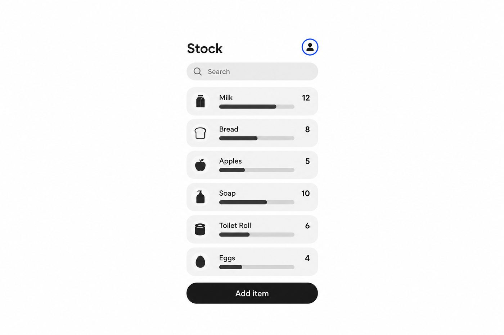

Naledi counted stock by voice, then built the app

Her aunt's shop in Imbali had a notebook for stock. By Thursday the pages were damp and the numbers didn't add up. Naledi started counting out loud into her phone, then writing it up at night.
That was the first version: a voice note and a spreadsheet. The app came three weeks later.
The first ten shops
She asked for help on a Friday. Sibusiso offered to try it in two shops near his house. He came back with one question: what happens when the data runs out?
"Every shop owner asked the same thing. Does it work offline? So that became version 0.4."Naledi Dube
Version 0.4 saves every count on the phone and sends it when the signal comes back. Fourteen people have tried it so far.
What she needs now
Testers in KwaZulu-Natal townships, and someone who has built voice input in isiZulu before.
v0.4Beta
Spaza Stock
Needs: testers in KZN
Try itOffer help